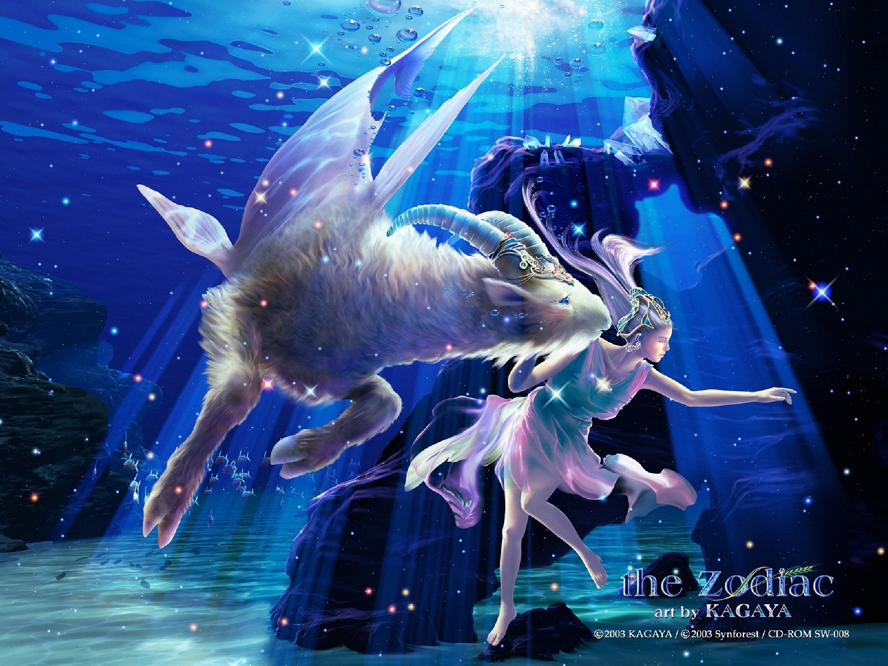
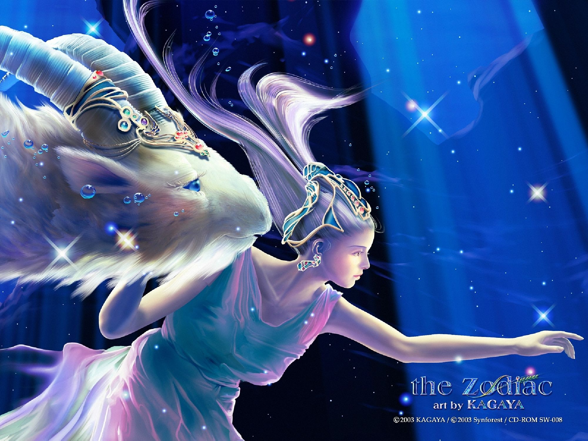
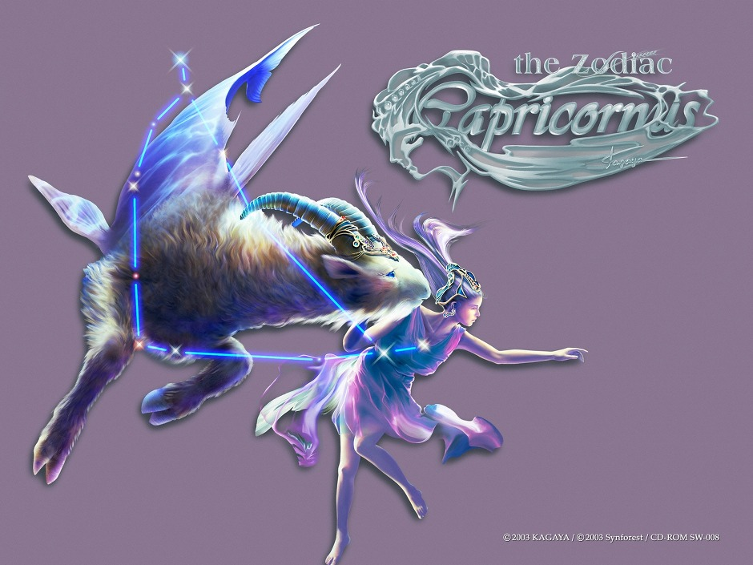
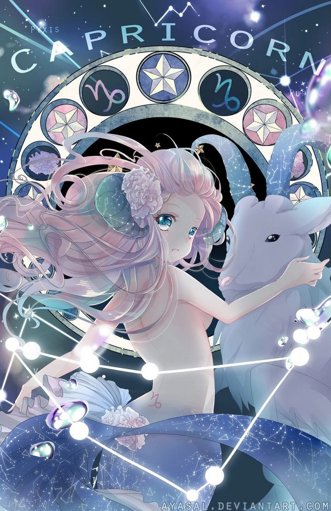

MA KẾT
Là biểu tượng của đất. Sao chiếu mệnh là sao Thổ. Người Capricorn có nhiều tham vọng, cương quyết, khá lạnh lùng và hay u sầu. Sự mệt mỏi không bao giờ đánh gục họ, họ làm việc rất chăm chỉ và họ sẵn sàng hi sinh bản thân nếu họ cảm thấy cần thiết. Họ lên kế hoạch một cách tỉ mỉ và cẩn thận những mục tiêu của họ và cách để đạt được chúng.
Để đạt được mục tiêu, họ sẵn sàng lầm bất cứ việc gì mà không cần ai giúp đỡ. Họ khá dè dặt và hay sống nội tâm, nhưng đôi khi họ lại trở nên bốc đồng. Họ thường nhút nhát và thiếu tự tin nhưng nó sẽ biến mất khi họ nhận ra rằng họ đang được để ý và đánh giá cao. Những công việc thích hợp cho người Capricorn: chính trị gia, nhà doanh nghiệp, người bán bảo hiểm, người kinh doanh bất động sản, nhân viên ngân hàng. Người Capricorn rất nghiêm túc, trung thành và chung thuỷ, nhưng không quá tình cảm.
2, Phẩm chấtLoài dê thứ 2 là dê nhà, ít tinh thần mạo hiểm và không tham vọng. chú dê này không cần vùng đất bao la và những ngọn núi cao hiểm trở. Nó không chịu nhúc nhích cho đến khi có người ẩy đi. Những người Ma Kết thuộc kiểu này, tuy vậy, lại có được thành công nhờ vào tính kiên nhẫn và bền bỉ.
Ở sao Thần Nông (đại diện của trách nhiệm, kết cấu và công việc nặng nhọc), Ma Kết là những người chân thành, thực tế và rất giỏi tổ chức.
Ma Kết tuân phục quyền lực và tôn trọng thông lệ, vì thế họ hay bị nhận xét là quá nghiêm chỉnh. Những lời chê trách không phải không làm Ma Kết bận tâm, nhưng vốn sáng suốt, người này chẳng muốn gây chuyện, thêm thù làm gì. Ma Kết hay nhường nhịn, tha thứ, đó chỉ là một sách lược đã suy tính kỹ nhằm đạt tới những mục đích cao hơn.
Sức mạnh thúc đẩy họ trong cuộc sống là sự thành công, tiền bạc, địa vị, quyền lực và – dù nhiều Ma Kết không thừa nhận – tình yêu.
Bản chất Ma Kết thận trọng khi bước chân vào cuộc tình mới. Nhưng khi có được cảm giác “an toàn” bên người ấy, băng phủ quanh họ sẽ tan, để lộ trái tim nhạy cảm và cực kỳ chung thủy.
3, Tính cách cơ bảnHiển nhiên, bất cứ tính chất gì cũng có một đối trọng. Và đối trọng của Bảo Bình chính là Ma Kết. Nếu Bảo Bình tượng trưng cho ước mơ, trí tuệ, lòng nhiệt huyết thì Ma Kết là giao điểm của tham vọng, sự đấu tranh và ham muốn cai trị lẫn nhau của con người.
Nói như vậy không có nghĩa những người sinh cung Ma Kết là những kẻ độc tài lập dị. Là hiện thân của vị thần biển nửa cá nửa dê trong thần thoại Babilon, Ma Kết còn sản sinh ra những con người dễ thích nghi, hoà nhập với hoàn cảnh và số phận. Nhưng, vị thần biển ấy còn là đại diện cho các thế lực bóng tối. Vì thế, bản ngã của các Ma Kết vẫn là âm thầm và nhiều mưu mẹo. Tất cả để phục vụ cho ước vọng chiếm lĩnh những đỉnh cao của họ.
Thậm chí, kim loại biểu trưng cho Ma Kết, là chì – loại kim loại độc hại nhất trong 7 loại quý kim của người Hy Lạp.
Ma Kết rất sớm đã bước vào xã hội, bước vào con đường mà người khác coi là nguy hiểm, khó khăn. Nhưng con đường này lại đưa họ đến đỉnh cao, càng nguy hiểm bao nhiêu thì càng hướng đến đỉnh cao bấy nhiêu. Trên con đường này, có lúc sẽ khiến cho người ta hoảng hốt không biết làm thế nào, mất đi phương hướng.
Nhưng đây chính là con đường đưa đến vinh quang, đây là mục đích sống chân chính của Ma Kết và cũng là việc đại sự mà họ thực sự quan tâm. Ma Kết có một nguyện vọng theo đuổi danh lợi, chính là một nguyện vọng khiến cho họ không ngừng leo lên phía trước, không có ai, cũng không có khó khăn nào có thể ngăn cản sự quyết tâm và nghị lực của họ.
Đương nhiên, có lúc họ cũng tính toán sai lầm hoặc vấp váp. Nhưng họ lại leo lên, đứng vững rồi lại tiếp tục theo đuổi mục đích. Cho dù mục đích lựa chọn của họ là lớn hay nhỏ, cho dù khó khăn không lúc nào là không có, họ quyết không thể thừa nhận thất bại, bỏ dở giữa chừng. Do họ có thể chấp nhận những khó khăn và vấp váp, do họ kiên cường bất khuất, kiên trì nghị lực, cho nên phần lớn họ đều có thể đạt được đến thành công vào độ tuổi trung niên.
Ma Kết trước nay không bao giờ không cẩn thận, họ sống có mục đích, tuân thủ quy củ. Họ mong muốn được là một người lao động chân chính và một người theo chủ nghĩa truyền thống đơn thuần bất khả xâm phạm. Những người có ý đồ tìm hiểu về những bí mật của con người họ tất nhiên sẽ gặp phải thất bại.
Trái ngược với các chòm sao khác, Ma Kết khi xem xét mọi việc không bao giờ làm qua loa, không tin tưởng vào số mệnh và vận khí, cũng không tin vào những thứ biểu hiện bề ngoài giả tạo, lúc họ leo lên theo những con đường đầy sỏi đá trắc trở, mỗi một bước đi của họ đều vô cùng cẩn thận, trước khi nhảy một bước về phía trước, họ đều cần phải tính toán cự ly cho tốt, họ không bỏ quan những cơ hội leo cao.
Cho dù họ leo lên trên chậm chạp, nhưng làm như vậy thật sự có thể đảm bảo cho họ giành được thành quả, thăng cấp. Họ cũng có thể có được những địa vị trong xã hội. Nhưng, họ cũng không được lấy trách nhiệm của họ thay thế cho tất cả mọi thứ khác trong cuộc sống, nếu như vậy, cho dù họ đã leo lên được đỉnh cao, họ cũng sẽ phát hiện ra thế giới của họ là hư không, cô độc, vì ở đỉnh cao đó, chỉ có mây trắng và họ mà thôi.
Đương nhiên, không cần phải nói ra cũng biết, Ma Kết ra sức tô điểm cho bản thân anh ta thành hình tượng một người trầm mặc ít nói. Mỗi đồ vật bài trí trong gia đình họ đều vừa hữu dụng lại vừa nhã nhặn; còn có chút bảo thủ và truyền thống trên màu sắc và thiết kế. Toàn bộ bố cục này khiến cho người ta có chút ý nghĩ tự phụ.
Ma Kết hầu như không có hứng thú trong giao tiếp xã hội, vì vậy họ cũng không được người khác yêu quý như các chòm sao khác. Nhưng khi tham gia vào một hội nào đó, họ nhất định phải có mục đích, nếu không, đối với họ điều này rõ ràng là lãng phí thời gian. Thái độ này hầu như lạnh lùng đến mức khó có thể lý giải, nhưng, những thu nhập từ cuộc sống của họ là có ích. Họ là những người ủng hộ kiên cường, họ trung thành, họ tinh anh, tính toán cẩn thận, họ không sợ những công việc cực khổ, chính vì vậy họ rất khá giả.
Ma Kết trong kì mười ngày thứ nhất thể hiện rõ đặc trưng tính cách trên; giai đoạn hai có sức thu hút lớn, không yêu thích công việc như những người giai đoạn trước, còn lại thì khá linh hoạt và đa biến, nhưng cũng ít ham muốn về danh lợi hơn.
4, Phương thức tư duy, kĩ xảo giao lưu và khả năng thích ứng với công việcMa Kết đã có một mục đích, họ sẽ không do dự phấn đấu nhằm thực hiện mục đích này. Lúc này, họ quyết tâm không phải là một kẻ lười nhác. Tư tưởng chỉ đạo nhân sinh của họ là “tôi lợi dụng”. Nó dẫn dắt họ, muốn họ lựa chọn cơ hội có khả năng, lựa chọn phương án tốt nhất, sau đó lại lựa chọn ra phương pháp tốt nhất để bước trên con đường đó.
Họ không bao giờ tồn tại tâm lý cầu may, cũng không nghĩ đến điều đương nhiên, họ cẩn thận và chi tiết suy xét đến những thất bại và nguy hiểm trước mỗi bước đi. Trong đầu óc họ không bao giờ có câu cách ngôn: Leo cao ngã đau. Vì vậy, để tránh ngã xuống, họ đã nghĩ đến tất cả những gì có thể nghĩ.
Chính như việc ai cũng có thể phạm sai lầm, Ma Kết cũng không ngoại lệ, nhưng, mỗi một lần phạm sai lầm, họ hầu như đều có thể hoá hung thành cát, hoá hiểm thành an. Bạn có thể hiểu rõ hơn khi nghĩ đến tổng thống Nixon của Hoa Kì, và sự kiện Water Gate.
Một số con đường sinh tồn của Ma Kết bắt nguồn từ lời nói và phương thức giao lưu khác của họ- làm việc công, có trách nhiệm, bảo thủ. Không ai cho rằng họ là những người thích tán chuyện phiếm, họ không nói nhiều; đặc biệt là với các mục tiêu và kế hoạch quan trọng, họ càng không nói.
Đối với một số người bạn của họ thì cách làm này của họ là bí mật, còn đối với họ, thì đó chẳng qua chỉ là sự cẩn thận mà thôi, vì biết càng ít thì cơ hội hạ độc thủ từ phía sau càng ít, họ nói chuyện rất ngắn gọn lưu loát, không khoa trương, cũng không khoa chân múa tay, cho dù những câu họ nói sắc sảo, nhưng họ cũng không muốn xuất hiện.
Vì vậy, bạn bè của họ đều rất lịch sự lễ độ, phán đoán chuẩn xác, hơn nữa họ thể hiện sự bảo thủ trong một số sự tình. Điều quan trọng hơn là lao động vất vả gian khổ của họ đều có được thu hoạch, nhưng họ không giỏi nịnh nọt, không giỏi ngoại giao hoặc khuyến khích, giúp đỡ những người ngốc nghếch.
Ma Kết khi tìm kiếm nghề nghiệp nhất định phải tìm những công việc có thể thi thố tài năng và có thể thăng tiến, tránh những công việc tầm phào, mục tiêu không xác định, lãng phí tiền của và vốn, vì những công việc này không làm cho bạn quan tâm. Những công việc cần đến tài năng quản lý của bạn, tài năng sử dụng tiền vốn có hiệu quả và nghị lực kiên trì không biết mệt mỏi của bạn và khả năng lao động gian khổ của bạn sẽ đưa bạn đến thành công.